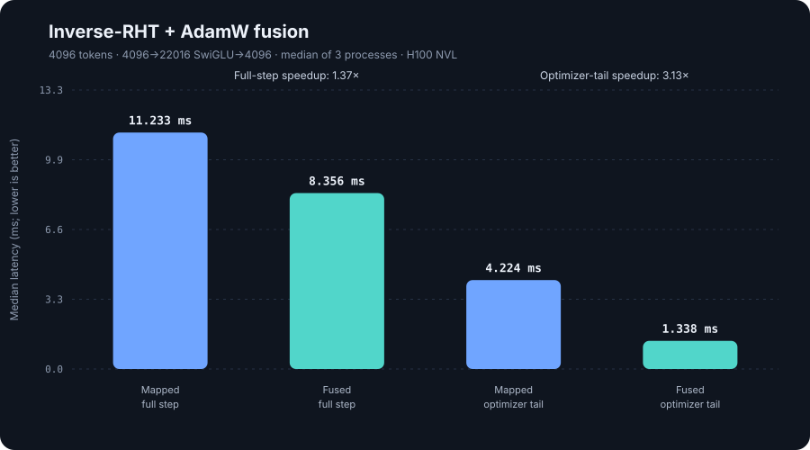
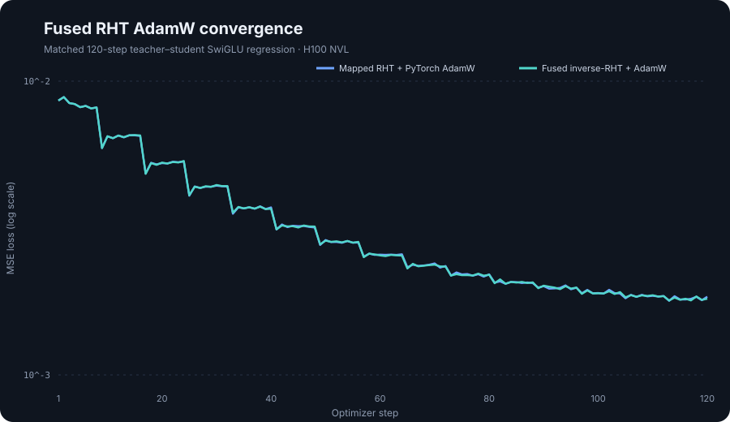
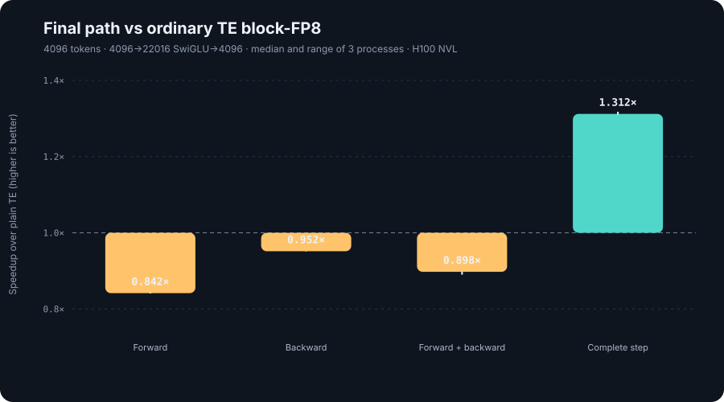

Tensor-core Fast Hadamard Transform
Matched H100 throughput
Defensible claims
Exact pipeline-matched optimizer ablation

Only explicit Rᵀ gradient mapping plus foreach AdamW is replaced. Outputs are exactly identical before update; full-step speedup is 1.370× (range 1.344–1.399×).
Fused optimizer convergence

Both independently owned paths begin at identical loss. Final MSE is 0.001847 mapped versus 0.001817 fused; this is a controlled regression, not language-model pretraining.
Separate net-cost comparison

Versus ordinary TE without RHT: 0.842× forward, 0.952× backward, and 1.312× complete step. This is a system comparison, not the one-to-one ablation.
What the fusion removes
One kernel consumes rotated BF16 Wgrad, computes inverse H16, updates FP32 moments, applies weight decay, and writes the original-basis master.
Nsight reduces the mapped-RHT full step from 67 to 11 GPU operations and its optimizer tail from 58 to 2.
Nsight Compute · FP16 · N=32768
Instruction reduction trend
FP16: 2.92× at N=256 · 2.25× at N=4096 · 3.47× at N=32768.
BF16: 2.79× at N=256 · 2.02× at N=4096 · 3.60× at N=32768.
Architecture interpretation
At N=256, runtime remains tied despite far fewer instructions because bandwidth and launch overhead dominate. At N=32768, reduced instruction pressure combines with 1.72–1.79× higher tensor-pipe activity and produces 1.69×/1.81× profiled-kernel speedup for FP16/BF16.
Execution board
Reproducibility artifacts
Model-shape full step + isolated optimizer tail · paired timing
120 matched steps · independently owned FP32 masters
Quantized bytes, outputs, gradients, masters, and moments
BF16, block-FP8, mapped RHT, and fused RHT AdamW
400 iterations · 2³⁰ elements · FP16/BF16
Pinned CUDA baseline
Pinned Triton baseline
Pinned source + documented BF16 compatibility patch
Commands, experiment ladder, open decisions